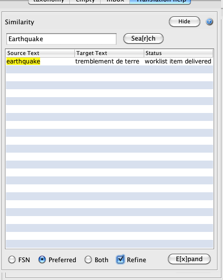
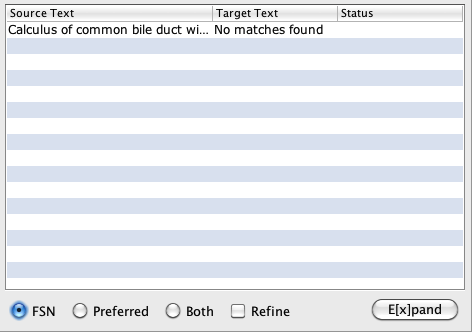
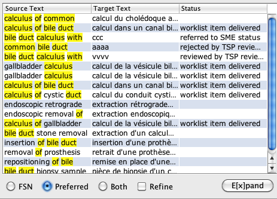
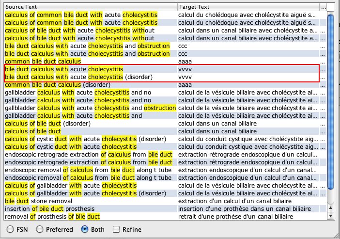
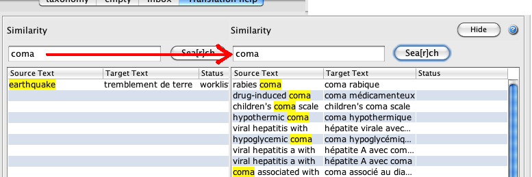
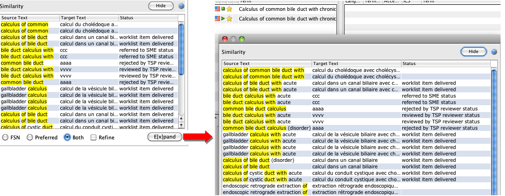

This window shows similar translations.
Previously translated words/terms that match with words contained in the description to be
translated are shown highlighted:

- Hide / Show button allows to collapse or display Similarity window according to
user's preferences.
- FSN - Preferred - Both buttons allow the user to choose viewing similarity
matches by FSNs, PT or both description types.
- If the user selects a similarity match by FSN, matching source and target FSN are
sought. If the target language has not translated FSNs, no similarity matches will be
displayed:

- If matching criteria are specified by preferred term the list of matches will be
displayed:

- Similarity matching by FSN and Preferred term ("Both" option) in a target language
without translated FSNs: the target descriptions will be shown twice

- Refine allows expanding searches to other words/terms, which will be displayed in
the same screen and replace the original matching descriptions. However, clicking again on
FSN or PT buttons will return to the original similarity display:

An enlarged view is displayed upon clicking “E[x]pand” button:

All the similarities between source and target descriptions, as well as the status of each
one in the translation workflow are displayed (whenever a concept has been included in the
current workflow. If a concept has been previously translated, i.e. in other releases, no
translation statuses will be shown).